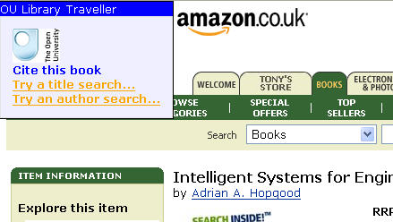
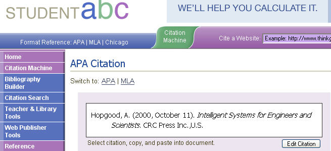

All seems quiet on the Talis Library Mashup Competition, so for what it's worth, here's an early entry... a Firefox Greasemonkey script that demonstrates a few ways of making use of an ISBN that's contained within a page URL.
So here it is:
1) extract something that looks like an ISBN from a page URL;
2) if it finds a candidate ISBN, it will pop up a small user panel, that will:
a) Provide a link to a service that will create a citation for the book described by that ISBN at Studentabc.com;
b) Provide a link to look up the author of that book in the OU library catalogue (voyager.open.ac.uk);
c) Provide a link to look up the title of that book in the OU library catalogue.

The information used for the catalogue and citation lookups is obtained by a call to the Amazon web service using the ISBN extracted from the page URL as a key.
The call to the citation creating service is made using a form created dynamically within the page by the GM script.

The links to the library catalogue demonstrate the construction of a normal/RESTful URL.
The title of the post suggests pivot browsing, so I guess what I mean here is that the script demonstrates how an ISBN pulled from an Amazon, Barnes and Noble, Ottakars, etc. page URL can be used to "pivot search" into the OU library catalogue by Title or Author.
The script does actually tuen up some things about the catalogue I didn't appreciate too, such as it's non-intuitive way of dealing with author search (at least, I couldnl;t work out what was going on). As a result, I've hacked a heuristic to pass (sometimes!) the first author's surname, follwed by their first intitial (maybe...). If I get chance, I'll try and work on this more...
As to why I used the Amazon webservice for the book details lookup - simply because I expect most (if any) people using the script to use it for books browsed on Amazon...
The script isn't a demonstration of a major league mashup by any means - it's more at the level of simple lego bricks... because whilst I look forward to seeing some heavyweight library mashups submitted to this competition, I was also hoping to see some entrants showing off tiny demos of particular tricks and tips that I could reuse;-) (It's much easier pulling a function out of a script that's 50 lines long in total than searching for it in a several hundred, or thousand, lines of code...).
Indeed, one thing I'd like to see come out of the TDN competition is a set of library mashup design patterns, a bit like the Yahoo User Interface design patterns:
Patterns are optimal solutions to common problems. As common problems are tossed around a community and are resolved, common solutions often spontaneously emerge. Eventually, the best of these rise above the din and self-identify and become refined until they reach the status of a Design Pattern.[IAWiki]
According to the Yahoo developer site, a pattern has four primary components: a title, a problem, a context and a solution. User Interface patterns can be effectivley demonstrated with simple screen shots.
For the mashup competition, I think it would be really handy if there was a stream demonstrating fucntional design patterns, backed up with simple bits of code (in whatever language) implementing the proposed pattern. If possible/appropriate, a demo of both server side (PHP, say) and client side (javascript) code would add even more value...
Anyway - that's as maybe, and something I aspire to rather than something I am actually going to put into practise tonight...because it's late and I just want to get this thing posted...
The script is not offered as a 'production service' application, although it should work. The styling leaves somethign to be desired, but I'm not a designer (I wish I could work the 37 Signals way!).
However, I hope it encourages other people to submit tiny, tiny exemplars of mashup components over the next few weeks that may be generally useful. I suspect there aren't that many people out there who are either capable of, or have time to, develop heavyweight apps (and I wouldn't expect these to be submitted until the final submission day anyway!), but in the meantime, why not share any snippets you might have? Who knows, maybe the Talis folks will give a prize to the smallest/simplest mashup???
Technorati tag: MUTL06
Posted by ajh59 at July 24, 2006 01:49 AMNice one.
I'm aware of other entries in preparation that mean we should have a good pool of different ideas for the judges to select from - and for everyone to see the innovativeness possible with library content.
Posted by: Paul Miller at July 24, 2006 09:19 AM